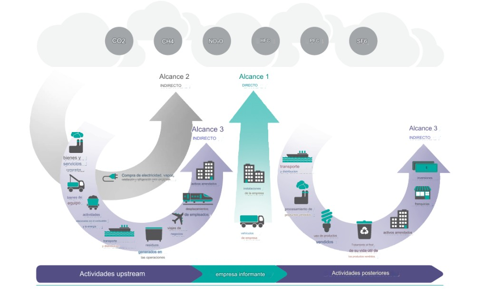

Fundamentos: Emisiones y Cambio Climático
Antes de entender cómo los bancos miden su huella climática, necesitamos entender qué son los gases de efecto invernadero, cómo se clasifican las emisiones y qué papel juega el sector financiero en la transición energética.
🎯 Objetivos del módulo
- Entender qué son los Gases de Efecto Invernadero (GEI) y de dónde provienen.
- Comprender por qué el cambio climático es urgente y qué riesgos genera para las instituciones financieras.
- Conocer el Acuerdo de París y sus implicaciones para la banca.
- Distinguir los tres alcances de emisiones (Scope 1, 2 y 3).
- Situar las emisiones financiadas como categoría dentro del Alcance 3.
La atmósfera terrestre actúa como un sistema de regulación térmica: permite la entrada de radiación solar y retiene parte del calor emitido por la superficie terrestre mediante los gases de efecto invernadero. Este mecanismo natural mantiene una temperatura media aproximada de 15 °C (frente a valores cercanos a −18 °C en su ausencia), y constituye una condición esencial para la estabilidad climática y el desarrollo de la vida.
El reto actual aparece cuando las actividades económicas y productivas incrementan de forma significativa la concentración de estos gases, alterando el equilibrio radiativo del planeta. Esta perturbación acelera el aumento de la temperatura global a un ritmo superior a la capacidad de adaptación de muchos sistemas naturales y socioeconómicos, fenómeno conocido como calentamiento antropogénico.
¿Qué es el CO₂ equivalente (CO₂e)?
Distintos gases tienen distintas capacidades de calentar la atmósfera. Para poder sumarlos y compararlos, se usa una unidad común: el CO₂ equivalente (CO₂e). Si el metano calienta 28 veces más que el CO₂ a lo largo de 100 años, entonces 1 tonelada de metano = 28 toneladas de CO₂e. Así podemos hablar de "100 millones de toneladas de CO₂e" como un número total que engloba todos los gases.
El Potencial de Calentamiento Global (PCG o GWP) es el indicador que mide cuánto calienta un gas con respecto al CO₂ en un horizonte de 100 años.
| Gas | Fórmula | Fuente principal | GWP (100 años) | Comentario |
|---|---|---|---|---|
| Dióxido de carbono | CO₂ | Quema de combustibles fósiles, deforestación | 1 | Gas de referencia. El más abundante. |
| Metano | CH₄ | Ganadería, pozos de gas, vertederos | 27–30 | Menos abundante pero mucho más potente a corto plazo. |
| Óxido nitroso | N₂O | Fertilizantes, combustión, industria química | 273 | Importante en el sector agrícola. |
| Hidrofluorocarburos | HFCs | Refrigeración, aire acondicionado | Hasta 14.800 | Sustituyeron a los CFCs pero siguen siendo problemáticos. |
| Hexafluoruro de azufre | SF₆ | Equipos eléctricos de alta tensión | 25.200 | El GEI más potente incluido en el protocolo de Kioto. |
El cambio climático no es solo un problema ambiental: es un riesgo financiero de primer orden. Los reguladores bancarios así lo reconocen.
Agudo: eventos extremos puntuales (huracanes, inundaciones, incendios). Pueden destruir activos físicos de los prestatarios del banco.
Crónico: cambios graduales y permanentes (subida del nivel del mar, aumento de temperaturas). Afectan el valor a largo plazo de activos e inmuebles.
Regulatorio: nuevas normativas (precios del carbono, prohibiciones).
Tecnológico: disrupción que hace obsoletas las tecnologías contaminantes.
De mercado: cambio en preferencias de consumidores e inversores.
Reputacional: asociación con sectores intensivos en carbono.
Legal: litigios climáticos contra empresas y sus financiadores.
Stranded Assets
Stranded assets (activos varados): activos que pierden su valor antes de lo esperado debido a la transición energética. Ejemplo: una central de carbón financiada a 30 años que el regulador obliga a cerrar en 10. Este riesgo afecta directamente la calidad crediticia de los clientes del banco.
En 2015, 196 países firmaron el Acuerdo de París con el objetivo de limitar el aumento de temperatura global a bien por debajo de 2 °C y perseguir esfuerzos para limitarlo a 1,5 °C.
El Artículo 2.1(c) del acuerdo exige que los flujos financieros sean consistentes con una vía de desarrollo bajo en emisiones y resiliente al clima. Es la base legal que obliga a la banca a alinear sus carteras.
Los sectores que el banco financia (energía, industria, transporte, inmuebles) son los principales emisores. Entender su perfil de emisiones no es solo un ejercicio de reporting: es parte de la evaluación de riesgo de cada operación.
| Marco | Qué hace | Obligatorio / Voluntario |
|---|---|---|
| GHG Protocol | Metodología contable base para clasificar y medir emisiones en Scopes 1, 2 y 3 | Referencia estándar global |
| PCAF | Mide emisiones financiadas de instituciones financieras (Scope 3 Cat. 15) | Voluntario, creciente adopción regulatoria |
| PACTA | Mide la alineación de carteras con escenarios climáticos por sector y tecnología | Voluntario |
| SBTi | Define objetivos de reducción basados en la ciencia climática | Voluntario, muy demandado |
| TCFD / ISSB / ESRS E1 | Marcos de divulgación de riesgos climáticos para inversores y reguladores | Obligatorio en muchas jurisdicciones |
| BCE / EBA | Supervisión bancaria: expectativas sobre gestión de riesgos climáticos | Obligatorio (Pilar 2 y Pilar 3 ESG) |
El ecosistema de marcos climáticos
GHG Protocol clasifica → PCAF mide las emisiones financiadas → PACTA evalúa el alineamiento con escenarios → SBTi fija objetivos de reducción → TCFD / ISSB / ESRS estructuran la divulgación al mercado.
El GHG Protocol organiza las emisiones en tres "alcances" o "scopes". Sirve para que cada empresa sea responsable de las emisiones que controla directamente y también de las que genera de forma indirecta.

Category 15: Investments
La categoría 15 del Scope 3 recoge las emisiones de las actividades financiadas o invertidas. Para un banco, esto representa habitualmente más del 95% de su huella de carbono total. Sus propias emisiones operacionales son marginales en comparación. Por eso, cuando hablamos de descarbonizar un banco, hablamos de descarbonizar su cartera de crédito e inversión.
💡 Mensajes Clave — Módulo 0
- Los GEI se miden en CO₂ equivalente (CO₂e) usando el GWP como factor de conversión.
- El cambio climático genera riesgos financieros reales: físicos (daños a activos) y de transición (stranded assets).
- El Acuerdo de París obliga jurídicamente a los flujos financieros a alinearse con la descarbonización (art. 2.1c).
- Para un banco, más del 95% de su huella de carbono proviene del Scope 3 Categoría 15: las emisiones de sus clientes financiados.
- GHG Protocol clasifica → PCAF mide → PACTA alinea → SBTi fija objetivos → TCFD/ISSB/ESRS reportan.
Introducción a la Huella Financiada
¿Qué son exactamente las emisiones financiadas? ¿Por qué los bancos deben medirlas? ¿Qué es PCAF y cómo funciona? En este módulo establecemos la base conceptual del resto del curso.
🎯 Objetivos del módulo
- Entender con precisión qué son las emisiones financiadas y qué no lo son.
- Conocer el marco PCAF y su origen.
- Identificar las clases de activos relevantes para un banco.
- Comprender la escala de calidad del dato y la incertidumbre metodológica.
Las emisiones financiadas son las emisiones de GEI que se atribuyen proporcionalmente a una institución financiera en función de su participación en la financiación de actividades económicas emisoras.
Dicho de forma más sencilla: si un banco presta dinero a una empresa que emite CO₂, una parte de esas emisiones se le "asigna" al banco, en proporción a cuánto representa su préstamo respecto al valor total de esa empresa.
Las que genera la propia empresa en sus operaciones: Scope 1, 2 y Scope 3 de su cadena de valor. Son las emisiones del cliente, no del banco.
La parte de las emisiones operacionales del cliente que se atribuye al banco en función de su participación financiera. Scope 3 Cat. 15 del banco.
Emisiones que no ocurren gracias a una actividad (ej. un parque eólico). Se reportan por separado, nunca se restan de las emisiones financiadas.
Mezclar emisiones financiadas con emisiones evitadas es uno de los errores más frecuentes. Las emisiones evitadas o las eliminaciones de carbono no pueden restarse de las emisiones financiadas para obtener una cifra neta. Deben reportarse siempre de forma separada y transparente.
La presión regulatoria es creciente e irreversible: el BCE exige gestionar el riesgo climático como cualquier otro riesgo financiero; la CSRD obliga a grandes empresas europeas a publicar información de doble materialidad (incluida la huella financiada); el Pilar 3 ESG exige disclosures cuantitativos sobre métricas de alineamiento.
Los inversores institucionales evalúan cada vez más la huella climática de los bancos. En este contexto, las agencias de rating ESG (MSCI, Sustainalytics) valoran especialmente la calidad, la disponibilidad y la credibilidad de los datos climáticos y ESG. La falta de datos fiables no implica necesariamente una penalización automática, pero sí limita la capacidad del banco para demostrar una gestión efectiva del riesgo, obliga a recurrir a estimaciones o proxies y puede traducirse en mayor incertidumbre y una peor evaluación relativa. Los grandes clientes corporativos también empiezan a exigir compromisos climáticos a sus bancos.
Medir las emisiones financiadas no es solo un ejercicio de reporting: es la base para gestionar el riesgo climático. Un banco con alta concentración en sectores intensivos en carbono está más expuesto al riesgo de transición. Sin medir, no puede gestionar. La medición es el punto de partida para comprometerse con Net Zero a través de la Net-Zero Banking Alliance (NZBA).
El Partnership for Carbon Accounting Financials (PCAF) es una iniciativa de la industria financiera que desarrolla y promueve una metodología estándar y abierta para medir y divulgar las emisiones de GEI asociadas a préstamos e inversiones.
Nació en 2015 en los Países Bajos, cuando un grupo de bancos holandeses decidió que necesitaban un método común. En 2020 se convirtió en una iniciativa global, alineada con el GHG Protocol. En términos simples: el GHG Protocol define qué hay que reportar (la Categoría 15 del Scope 3), y PCAF define cómo calcularlo de forma práctica y comparable entre entidades.
No todos los datos de emisiones tienen la misma fiabilidad. PCAF establece una escala de calidad del 1 al 5, donde 1 es el más preciso y 5 el menos:
| Nivel | Calidad | Descripción | Ejemplo |
|---|---|---|---|
| 1 | Verificado | Datos de emisiones del cliente verificados por tercero | Informe de sostenibilidad auditado del cliente |
| 2 | Reportado | Datos reportados por el cliente (no verificados) | Auto-declaración del cliente en formulario ESG |
| 3 | Estimado con datos específicos | Estimación basada en datos físicos del activo | Consumo energético del edificio + factor de emisión |
| 4 | Proxy sectorial | Ratio de emisiones por unidad de ingresos del sector | Intensidad de emisiones media del sector cementero |
| 5 | Muy estimado | Estimación basada en proxy de clase de activo | Media de emisiones de todas las empresas sin dato |
La conversación con el cliente sobre sus datos de emisiones no es solo un trámite ESG: es lo que permite pasar de una calidad 4 a una calidad 1-2, mejorando la precisión del inventario del banco y reduciendo la incertidumbre en los cálculos de riesgo climático.
💡 Mensajes Clave — Módulo 1
- Las emisiones financiadas son la proporción de emisiones de un cliente que se atribuye al banco según su participación financiera.
- Emisiones operacionales, financiadas y evitadas son conceptos distintos que nunca deben mezclarse.
- PCAF complementa al GHG Protocol, aportando metodología específica para instituciones financieras.
- La escala de calidad del dato (1-5) mide la fiabilidad del cálculo: 1 es verificado, 5 es muy estimado.
- Los reguladores (BCE, EBA, CSRD) están convirtiendo la medición de emisiones financiadas en una obligación.
Cómo se Mide: PCAF en Práctica
La lógica de PCAF es sencilla: a cada banco se le atribuye la parte proporcional de las emisiones de sus clientes. Vemos la fórmula base, las clases de activo y por qué cada una tiene su particularidad.
🎯 Objetivos del módulo
- Entender la lógica del factor de atribución y por qué funciona así.
- Conocer las principales clases de activo que cubre PCAF y qué las diferencia.
- Ver un ejemplo numérico sencillo que ilustra el cálculo.
La lógica metodológica es de atribución proporcional: una participación financiera del 5% implica la asignación del 5% de los resultados asociados al activo financiado, incluidas sus emisiones.
Comprar un piso entre varios
Si tres personas compran un piso al 50%-30%-20% y ese piso consume energía que genera 4 tCO₂e al año, la huella atribuida a cada uno sería 2 / 1,2 / 0,8 tCO₂e. No significa que sean "culpables" de esas emisiones, sino que se les asigna contablemente una parte proporcional. Exactamente la misma lógica aplica cuando un banco financia a una empresa.
Exposición del banco = saldo vivo del préstamo, inversión en acciones o bonos
Valor total del activo = varía según la clase de activo (ver tabla abajo)
Banco con préstamo a una empresa energética
El banco tiene 20 M€ prestados a una empresa cuyo valor total (EVIC) es 2.000 M€ y que emite 1.000.000 tCO₂e/año.
Emisiones financiadas = 1.000.000 × 1% = 10.000 tCO₂e/año
Con solo el 1% del valor de la empresa, el banco asume el 1% de sus emisiones en su inventario.
PCAF no aplica la misma fórmula a todo. El "valor total del activo" que actúa como denominador cambia según el tipo de financiación, porque cada clase de activo tiene una naturaleza distinta. Aquí está la visión de conjunto:
Usar el denominador equivocado da cifras incorrectas. No es lo mismo comparar la exposición del banco contra el EVIC de la empresa que contra sus ventas anuales o sus activos contables. PCAF estandariza este punto precisamente para que los datos sean comparables entre bancos.
💡 Mensajes Clave — Módulo 2
- La lógica de PCAF es proporcional: el banco asume la parte de emisiones que corresponde a su participación en la financiación.
- Emisiones financiadas = Emisiones del cliente × Factor de atribución.
- Cada clase de activo requiere un denominador específico para asegurar una atribución consistente, evitar distorsiones en el cálculo y mejorar la comparabilidad de los resultados.
- La calidad del dato de emisiones del cliente determina la precisión del cálculo: mejorar ese dato es un objetivo estratégico.
Visión Sectorial: Por Qué Cada Sector es Diferente
No todos los sectores generan las mismas emisiones ni se descarbonizan de la misma manera. Para el equipo comercial, entender el perfil climático de cada sector es tan importante como entender su perfil crediticio.
🎯 Objetivos del módulo
- Entender por qué PCAF y PACTA diferencian el tratamiento por sector.
- Conocer el perfil de emisiones de los principales sectores de la cartera.
- Identificar qué tipos de datos y métricas son relevantes en cada caso.
- Conectar la visión sectorial con la conversación comercial con el cliente.
Dos empresas con el mismo tamaño de préstamo pueden tener huellas financiadas radicalmente distintas según a qué se dediquen. Una empresa de software y una cementera con el mismo EVIC no generan las mismas emisiones: la cementera puede emitir cientos de veces más.
Por eso PCAF y PACTA no tratan a todos los sectores igual. Cada uno tiene:
- Unidades de medida propias (tCO₂e por MWh, por tonelada de acero, por km recorrido…)
- Scopes relevantes distintos (en petróleo y gas, el Scope 3 del cliente puede superar el 80% de sus emisiones totales)
- Palancas de descarbonización diferentes (eficiencia en cemento, mix tecnológico en electricidad, electrificación en transporte)
- Horizontes de transición distintos (la electricidad ya tiene tecnologías cero-emisiones; el acero y el cemento siguen siendo difíciles)
La conversación climática es la conversación de negocio
Cuando el banco pide a un cliente de petróleo y gas su Scope 3, o a un cliente inmobiliario su certificado de eficiencia energética, no es un trámite burocrático: es información que afecta directamente a cómo se calcula la huella del banco, cómo se evalúa el riesgo de transición de ese cliente y qué oportunidades de financiación verde se le pueden ofrecer.
A continuación, una visión rápida de los principales sectores de cartera, su nivel de emisiones y el estado de su transición:
Cuando el banco financia un proyecto (parque eólico, planta solar, central de gas), la lógica de atribución es la misma —proporción de la inversión del banco sobre el coste total del proyecto— pero el resultado tiene una particularidad importante: los proyectos renovables tienen emisiones financiadas muy bajas pero también generan emisiones evitadas muy relevantes.
Dos cifras que conviven pero no se mezclan
Un parque eólico financiado al 20% (60 M€ sobre 300 M€ de coste total) con 12.000 tCO₂e/año de emisiones propias y 150.000 tCO₂e/año de emisiones evitadas reporta:
Emisiones evitadas (métrica complementaria): 150.000 × 20% = 30.000 tCO₂e/año
Las evitadas son 12,5 veces mayores que las directas y demuestran el beneficio climático real. Pero nunca se compensan entre sí en el inventario principal.
💡 Mensajes Clave — Módulo 3
- Cada sector tiene su propio perfil de emisiones, métricas relevantes y palancas de descarbonización: no hay un enfoque único.
- En sectores como petróleo y gas, ignorar el Scope 3 del cliente subestima gravemente la huella financiada del banco.
- Cemento y acero son "hard-to-abate": sus emisiones de proceso hacen que la descarbonización sea lenta y costosa.
- En project finance renovable, las emisiones evitadas son una métrica complementaria valiosa, pero nunca se compensan con las emisiones del inventario principal.
- La conversación sobre datos de emisiones con el cliente es también una conversación sobre riesgo y oportunidad comercial.
PACTA: Evaluación de Alineamiento Climático de la Cartera
PCAF cuantifica las emisiones actuales de la cartera. PACTA evalúa su grado de alineamiento con trayectorias climáticas de referencia. En conjunto, ambos enfoques permiten pasar de una medición estática del presente a una evaluación prospectiva de la dirección de transición.
🎯 Objetivos del módulo
- Entender qué es PACTA y en qué se diferencia de PCAF.
- Comprender las métricas de alineamiento y cómo interpretarlas.
- Conocer los principales escenarios climáticos y sus implicaciones.
- Aplicar un caso práctico de análisis de cartera eléctrica.
Pregunta que responde: ¿Cuál es el volumen de emisiones actualmente atribuido a la cartera?
Funciona como un inventario de emisiones financiadas, expresado en tCO₂e, y proporciona una base cuantitativa para el reporting y la gestión del riesgo climático presente.
Pregunta que responde: ¿En qué medida la cartera está alineada con trayectorias climáticas de 1,5-2 °C?
Aplica un enfoque prospectivo que compara la composición tecnológica y la evolución esperada de la cartera con los requerimientos definidos por escenarios climáticos de referencia.
PACTA conecta los datos de cartera del banco con los activos físicos reales de la economía: qué plantas eléctricas, qué fábricas, qué flotas tienen las empresas financiadas. Luego compara esos activos con las trayectorias que exigen los escenarios climáticos.
| Métrica | Qué mide | Ejemplo |
|---|---|---|
| Technology Fuel Mix (TFM) | Composición tecnológica de la producción en cartera: ¿cuánto carbón, gas y renovables hay? | Mi cartera eléctrica tiene 30% carbón, 40% gas, 30% renovables. El escenario NZE exige 5% / 15% / 80% para 2030. |
| Production Volume Trajectory (PVT) | ¿Está creciendo o decreciendo la producción de cada tecnología en línea con el escenario? | El escenario pide reducir producción de carbón un 30% en 5 años. Las empresas en cartera la aumentan un 5%. Desalineación del 35%. |
| Emission Intensity (EI) | Emisiones por unidad de producción, comparadas con el objetivo del escenario | Mi cartera eléctrica tiene 600 kgCO₂/MWh de media. El NZE exige 400 kgCO₂/MWh. Distancia: +50%. |
Si el resultado es = 0: la cartera está en el escenario → ALINEADA
Si el resultado es < 0: la cartera mejora el escenario → SOBRE-ALINEADA
| Escenario | Organismo | Temperatura | Características |
|---|---|---|---|
| NZE (Net Zero Emissions 2050) | IEA | 1,5 °C | Descarbonización agresiva. Elimina carbón en electricidad antes de 2030. Referencia más exigente. |
Banco con tres exposiciones en el sector eléctrico
| Empresa | Exposición | % Carbón | % Gas | % Renovables |
|---|---|---|---|---|
| Empresa A | 100 M€ | 50% | 30% | 20% |
| Empresa B | 100 M€ | 10% | 40% | 50% |
| Empresa C | 100 M€ | 0% | 20% | 80% |
| Mix Cartera | 300 M€ total | 20% | 30% | 50% |
Demasiado carbón, demasiado gas, pocas renovables. Para alinearse con NZE, el banco debería reducir exposición a empresas dependientes del carbón (Empresa A) y aumentar la financiación de renovables, estableciendo objetivos sectoriales a 5 años.
💡 Mensajes Clave — Módulo 4
- PCAF responde "¿cuánto emite hoy?"; PACTA responde "¿vamos en la dirección correcta?"
- PACTA conecta los datos financieros con activos físicos reales, permitiendo un análisis forward-looking por tecnología.
- Las tres métricas clave: Technology Fuel Mix (composición tecnológica), Production Volume Trajectory (volumen futuro) y Emission Intensity (emisiones por unidad).
- Distancia de alineamiento = (cartera / escenario) − 1. Positivo significa desalineado hacia arriba.
- El escenario elegido (NZE, APS, STEPS) condiciona los resultados: la transparencia sobre su elección es esencial.
Evaluación Global del Curso
Demuestra que has asimilado los conceptos clave de todos los módulos. Esta evaluación cubre GEI, PCAF, clases de activo, visión sectorial y PACTA.
🏆 Evaluación Final — Huella Financiada y Emisiones Financiadas
Responde las 12 preguntas para obtener tu puntuación. Recibirás feedback en cada pregunta.
1. ¿Qué significa CO₂ equivalente (CO₂e)?
2. ¿En qué Alcance del GHG Protocol se incluyen las emisiones financiadas de un banco?
3. ¿Qué ocurre con las emisiones evitadas bajo PCAF?
4. El EVIC de una empresa es 400 M€ y el banco tiene 20 M€ de préstamo. ¿Cuál es el factor de atribución?
5. En project finance, ¿qué denominador se usa para el factor de atribución?
6. ¿Cuál es el nivel de calidad del dato PCAF más alto (más preciso)?
7. Para hipotecas residenciales, ¿qué indicador de la vivienda es clave en el cálculo PCAF?
8. ¿Cuál es la principal diferencia entre PACTA y PCAF?
9. Un banco tiene exposición de 10 M€ a una empresa con EVIC = 200 M€ y emisiones S1+S2 = 600.000 tCO₂e. ¿Cuáles son las emisiones financiadas?
10. ¿Por qué petróleo y gas requieren incluir el Scope 3 del cliente en el cálculo de emisiones financiadas?
11. ¿Qué significa "stranded asset" en el contexto de la transición climática?
12. La distancia de alineamiento PACTA se calcula como: